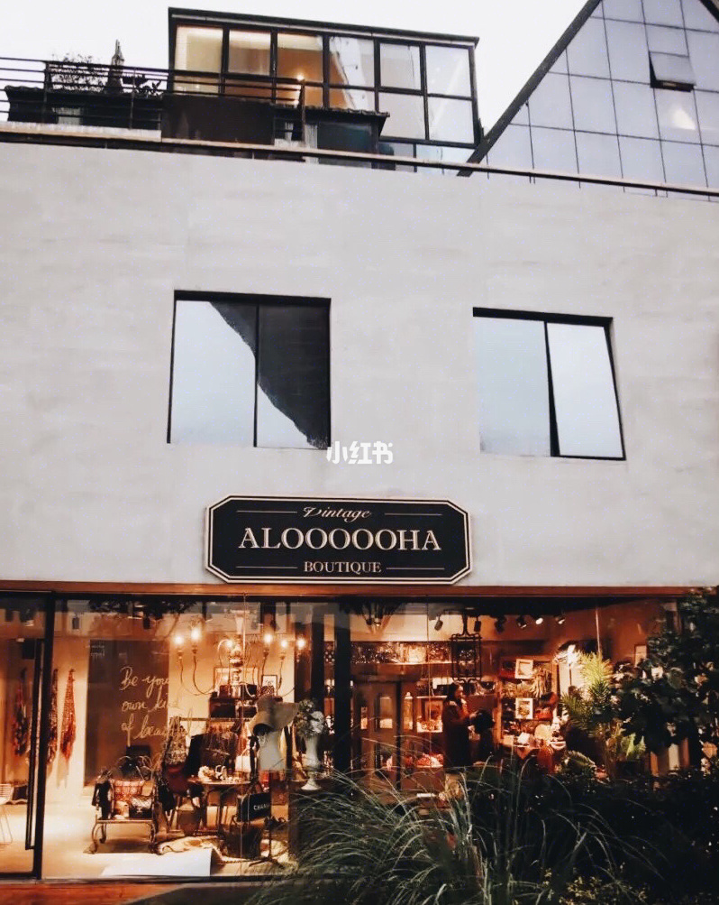
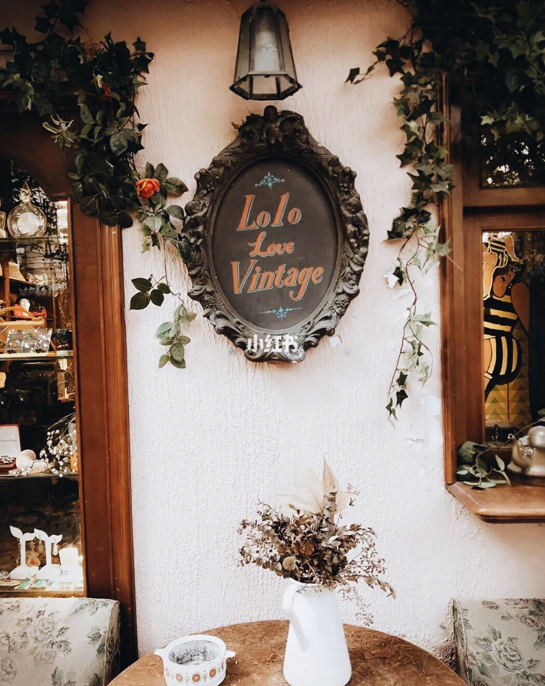
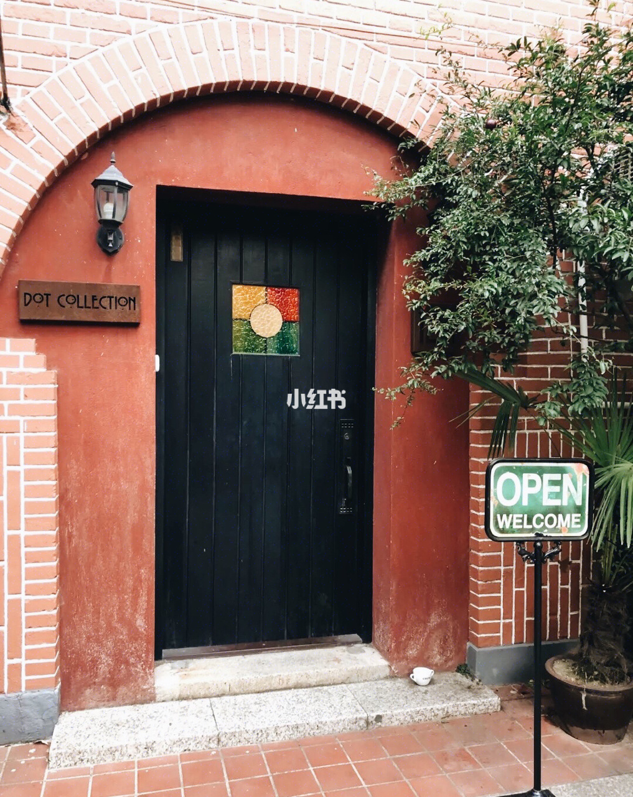

Home / ShangHai
Vintage market in Shanghai |
|
|---|---|
|  |
Aloooooha VintageLocation: 1/F, 18 Lujiabang Lu, near Waima Lu Huangpu DistrictDescription: Aloha with five Os. This one is for serious collectors and fashionistas. Located inside a warehouse office park under the Nanpu Bridge, this shop has been around for 10 years. They focus on vintage, second-hand luxury brand handbags, as well as high-fashion clothing. Every big-name designer brand you may know of... |
LoLo Love VintageLocation: 2 Yongfu Lu, near Wuyuan Lu Xuhui DistrictDescription: This secluded, almost mystical-looking yard hides behind a tiny blue gate on Yongfu Lu. A rare gem in the city with a room full of collections: beautifully aged, and exceptionally rare. They collect from as early as 1920s all the way up to the 80s. Every piece deserves a closer look. Prices can go up to over 2,000rmb, especially for designer brands, but most pieces are between 300-500rmb. |
 |
|  |
Dot CollectionLocation: No. 12, Lane 1462 Fuxing Zhong Lu, near Huaihai Zhong Lu Xuhui DistrictDescription: Pricy, extravagant. This is the place to go if you’re looking for mid- to high-end stuff. Expect to spend a stack of red ones on a sleek Yves Saint Laurent suit dress from the 80s, or a Ferragamo jacket that is no longer available on the market. Also on sale are luxury-brand handbags, women’s shoes, and vintage jewelries. |